A modern data warehouse lets you bring together all your data at any scale easily, and to get insights through analytical dashboards, operational reports, or advanced analytics for all your users.
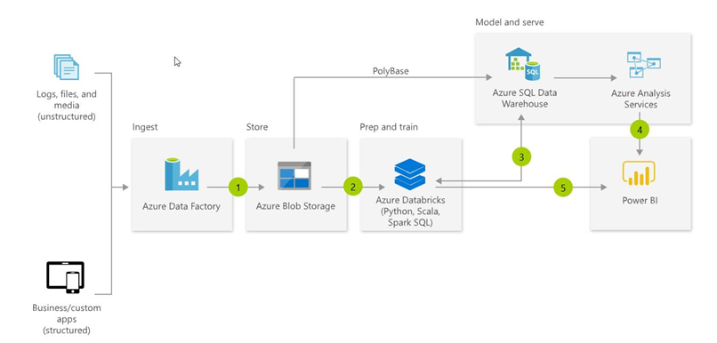Sample solution diagram.
Combine all your structured, unstructured and semi-structured data (logs, files, and media) using Azure Data Factory to Azure Blob Storage.
Leverage data in Azure Blob Storage to perform scalable analytics with Azure Databricks and achieve cleansed and transformed data.
Cleansed and transformed data can be moved to Azure SQL Data Warehouse to combine with existing structured data, creating one hub for all your data. Leverage native connectors between Azure Databricks and Azure SQL Data Warehouse to access and move data at scale.
Build operational reports and analytical dashboards on top of Azure Data Warehouse to derive insights from the data, and use Azure Analysis Services to serve thousands of end users.
Run ad hoc queries directly on data within Azure Databricks.
The same technologies also enable Advanced Analytics on big data, which allows customers to transform their data into actionable insights using the best-in-class machine learning tools. This architecture allows you to combine any data at any scale, and to build and deploy custom machine learning models at scale.
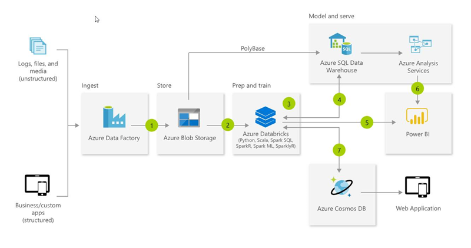Sample solution diagram.
Bring together all your structured, unstructured and semi-structured data (logs, files, and media) using Azure Data Factory to Azure Blob Storage.
Use Azure Databricks to clean and transform the structureless datasets and combine them with structured data from operational databases or data warehouses.
Use scalable machine learning/deep learning techniques, to derive deeper insights from this data using Python, R or Scala, with inbuilt notebook experiences in Azure Databricks.
Leverage native connectors between Azure Databricks and Azure SQL Data Warehouse to access and move data at scale.
Power users take advantage of the inbuilt capabilities of Azure Databricks to perform root cause determination and raw data analysis.
Run ad hoc queries directly on data within Azure Databricks.
Take the insights from Azure Databricks to Cosmos DB to make them accessible through web and mobile apps.
Scenario overview
Like many organizations, ContosoAuto generates data from numerous system, each of which has its own location and format, including structured, unstructured, and semi-structured data. They would like the ability to combine and analyze these disparate datasets in order to gain actionable insights that can help them operate their business more efficiently.
In this experience, you will see how Azure Data Factory (ADF), Azure Databricks, and Azure SQL Data Warehouse (SQL DW) can be used together to build a modern data warehouse. You will start by using Azure Data Factory (ADF) to automate the movement of data in various formats gathered from various sources, including Cosmos DB, into a centralized repository, Azure Data Lake Storage Gen2 (ADLS Gen2) in this case. You will then use Azure Databricks to prepare and analyze those data, and finally write the aggregations to Azure SQL Data Warehouse (SQL DW).
As part of the process, you will also use Databricks to connect to the Cosmos DB Change Feed to stream near-real-time vehicle telemetry data directly into your SQL DW using Spark Structured Streaming.
Task 1: Execute ADF Pipeline to copy data
In this task, you will quickly set up your ADLS Gen2 filesystem using a Databricks notebook, and then review and execute ADF pipelines to copy data from various sources, including Cosmos DB, in your ADLS Gen2 filesystem.
In a web browser, navigate to the Azure portal, select Resource groups from the left-hand menu, and then select the resource group named tech-immersion-XXXXX resource group (where XXXXX is the unique identifier assigned to you for this workshop).
The tech-immersion resource group is selected.
Prior to using ADF to move data into your ADLS Gen2 instance, you must create a filesystem in ADLS Gen2. This will be done using an Azure Databricks notebook. Select your Azure Databricks Service resource from the list of resources in the resource group. This will be named XXXXX (where XXXXX is the unique identifier assigned to you for this workshop).
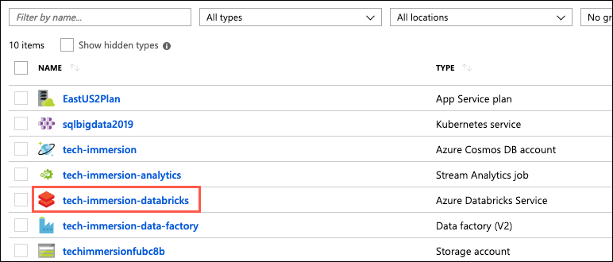The Databricks resource is selected from the list of resources in the tech-immersion resource group.
On the Azure Databricks Service blade, select Launch Workspace.
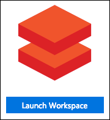Databricks Launch Workspace
In your Databricks workspace, select Clusters from the left-hand menu, and then select the Start button for the cluster. Select Confirm in the dialog to start the cluster.
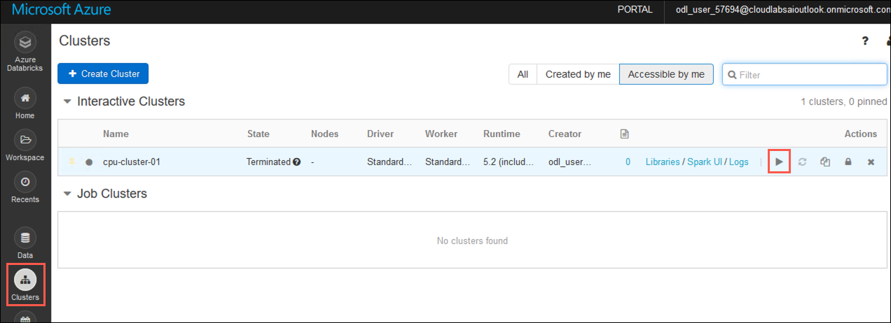The start button for the cluster is highlighted on the Clusters page in Databricks.
It will take 2-4 minutes for the cluster to start. You can move on to the next steps while the cluster is starting up.
Select Workspace from the left-hand menu, and then select Shared.
Select the drop down arrow next to Shared, and select Import from the context menu.
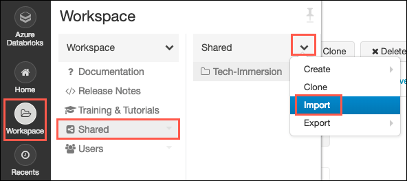Import is highlighted in the context menu for the Shared workspace in Databricks.
On the Import Notebooks dialog, select Browse and select the Tech-Immersion.dbc file located in the C:\lab-files\data\4 folder on your lab VM, and then select Import.
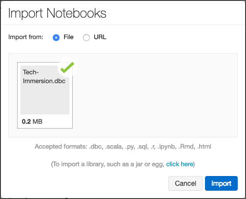The Import Notebooks dialog is displayed, with the Tech-Immersion.dbc file listed in the import box.
In the shared workspace, select the Tech-Immersion folder, followed by the Day-1 and Experience-4 folders. Then select the notebook named 1-Environment-Setup.
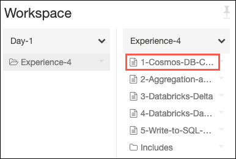In the shared workspace, the 1-Environment-Setup notebook is selected under the Tech-Immersion/Day-1/Experience-4 folder.
In the 1-Environment-Setup notebook, follow the instructions contained in the notebook, and then return here to complete the remaining steps of this task.
In the Azure portal, navigate to the tech-immersion-XXXXX resource group (where XXXXX is the unique identifier assigned to you for this workshop) as you did in step 1 above, and then select tech-immersion-data-factory from the list of resources.
The Data Factory resource is selected from the list of resources in the tech-immersion resource group.
On the Data Factory blade, select the Author & Monitor tile to launch the Azure Data Factory management page.
The Author & Monitor tile is highlighted on the Data Factory overview blade.
On the Azure Data Factory page, select the Author (pencil) icon from the left-hand menu.
The Author icon is highlighted on the left-hand menu of the Azure Data Factory page.
On the ADF Author page, select Pipelines to expand the list, and then select the CopyData pipeline from the list.
Azure Data Factory pipelines
The CopyData pipeline consists of three copy activities. Two of the activities connect to your Azure SQL Database instance to retrieve vehicle data from tables there. The third connects to Cosmos DB to retrieve batch vehicle telemetry data. Each of the copy activities writes data into files in ADLS Gen2.
On the pipeline toolbar, select Trigger to run the CopyData pipeline, and then select Finish on the Pipeline Run dialog. You will receive a notification that they CopyData pipeline is running.
Trigger is highlighted in the Data Factory pipeline toolbar.
To observe the pipeline run, select the Monitor icon from the left-hand menu, which will bring up a list of active and recent pipeline runs.
Azure Data Factory pipeline runs
On the pipeline runs monitor page, you can see all active and recent pipeline runs. The Status field provide and indication of the state of the pipeline run, from In Progress to Failed or Canceled. You also have the option to filter by Status and set custom date ranges to get a specific status and time period.
Select the Activity Runs icon under Actions for the currently running pipeline to view the status of the individual activities which make up the pipeline.
Data Factory activity runs
The Activity Runs view allows you to monitor individual activities within your pipelines. In this view, you can see the amount of time each activity took to execute, as well as select the various icons under Actions to view the inputs, outputs, and details of each activity run. As with pipeline runs, you are provided with the Status of each activity.
Task 2: Start the vehicle telemetry generator
The data generator console application creates and sends simulated vehicle sensor telemetry for an array of vehicles (denoted by VIN (vehicle identification number)) directly to Cosmos DB. For this to happen, you first need to configure it with the Cosmos DB connection string.
In this task, you will configure and run the data generator to save simulated vehicle telemetry data to a telemetry collection in Cosmos DB.
Open Windows Explorer and navigate to C:\lab-files\data\4\TelemetryGenerator. Open appsettings.json with a text editor, such as Notepad.exe.
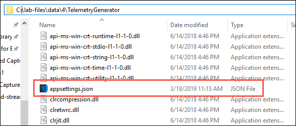The appsettings.json file is highlighted in the C:-files\4folder.
To retrieve your Cosmos DB connection string, open a web browser and navigate to the Azure portal. Select Resource groups from the left-hand menu, and then select the tech-immersion-XXXXX resource group (where XXXXX is the unique identifier assigned to you for this workshop).
The tech-immersion resource group is selected.
Select the Azure Cosmos DB account from the list of resources in your resource group.
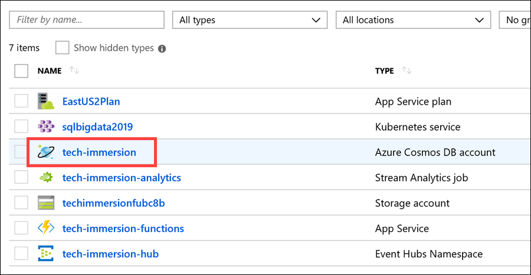The Azure Cosmos DB account is selected in the resource group.
Select Firewall and virtual networks from the left-hand menu on your Cosmos DB blade, then select Allow access from All networks. Select Save. This will allow the vehicle telemetry generator application to send data to your Cosmos DB collection. Select Save.
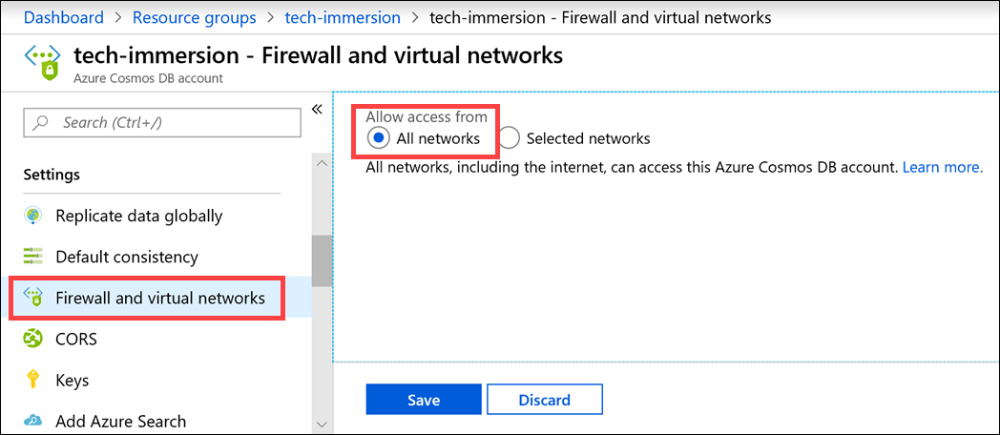The All networks option is selected within the Firewall and virtual networks blade.
Next, select Keys from the left-hand menu.
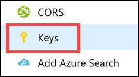The Keys link on the left-hand menu is highlighted.
Copy the Primary Connection String value by selecting the copy button to the right of the field.
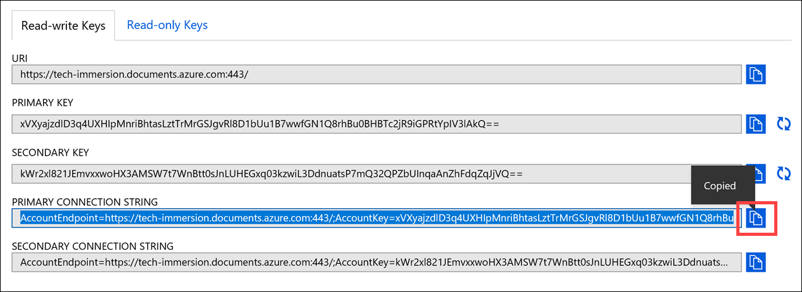The Primary Connection String key is copied.
Return to the appsettings.json file in your text editor, and paste your Cosmos DB connection string value next to COSMOS_DB_CONNECTION_STRING. Make sure you have quotes ("") around the value, as shown in the example below:
SECONDS_TO_LEAD is the amount of time to wait before sending vehicle telemetry data. Default value is 0.
SECONDS_TO_RUN is the maximum amount of time to allow the generator to run before stopping transmission of data. The default value is 2400. Data will also stop transmitting when you enter <Ctrl+C> while the generator is running, or if you close the window.
Save the appsettings.json file.
In your open Windows Explorer window, locate and double-click the TransactionGenerator.exe file (located in the same C:\lab-files\data\4\TelemetryGenerator folder as appsettings.json) to launch the console application.
Screenshot of the console window.
A console window will open and you should see it start to send data after a few seconds. Once you see that it is sending data to Cosmos DB, minimize the window and allow it to run in the background throughout this experience.
Screenshot of the console window.
The top of the output displays information about the Cosmos DB collection you created (telemetry), the requested RU/s as well as estimated hourly and monthly cost. After every 1,000 records are requested to be sent, you will see output statistics.
Task 3: Read streaming data from Cosmos DB using Databricks
You have now used ADF to move data from various sources, including Cosmos DB, into an ADLS Gen2 filesystem. In this task, you will use an Azure Databricks notebook to extend the use of Cosmos DB further. You will create a connection to your Cosmos DB instance, using the Azure Cosmos DB Spark Connector, and query streaming data from the Cosmos DB Change Feed.
Return to the Azure Databricks Workspace you opened previously, and in your Databricks workspace, select Workspace from the left-hand menu, and then select Shared.
In the shared workspace, select the Tech-Immersion folder, followed by the Day-1 and Experience-4 folders. Then select the notebook named 2-Cosmos-DB-Change-Feed.
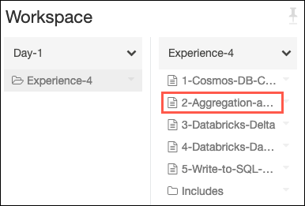In the shared workspace, the 2-Cosmos-DB-Change-Feed notebook is selected under the Tech-Immersion/Day-1/Experience-4 folder.
In the 2-Cosmos-DB-Change-Feed notebook, follow the instructions to complete the remaining steps of this task.
The notebook contains all the instructions needed to complete this task. In addition, the final cell of the notebook contains instructions on the next step, which will include a link to the notebook for the next task in this experience, or instructions to return to this document.
Task 4: Perform data aggregation and summarization
In this task, you will using Databricks to perform data preparation, aggregation and summarization with both batch and streaming data.
In your Databricks workspace, select Workspace from the left-hand menu, then select Shared.
In the shared workspace, select the Tech-Immersion folder, followed by the Day 1 and Experience 4 folders. Then select the notebook named 3-Aggregation-and-Summarization.
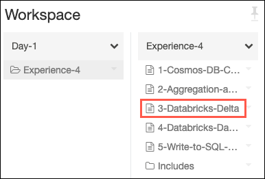In the shared workspace, the 3-Aggregation-and-Summarization notebook is selected under the Tech-Immersion/Day-1/Experience-4 folder.
In the 3-Aggregation-and-Summarization notebook, follow the instructions to complete the remaining steps of this task.
The notebook contains all the instructions needed to complete this task. In addition, the final cell of the notebook contains instructions on the next step, which will include a link to the notebook for the next task in this experience, or instructions to return to this document.
Task 5: Persisting data to Databricks Delta tables
In this task, you will see how Databricks Delta provides capabilities previous unavailable for updating records in an Hive table by using the UPSERT method to update existing records and insert new records.
In your Databricks workspace, select Workspace from the left-hand menu, then select Shared.
In the shared workspace, select the Tech-Immersion folder, followed by the Day-1 and Experience-4 folders. Then select the notebook named 4-Databricks-Delta.
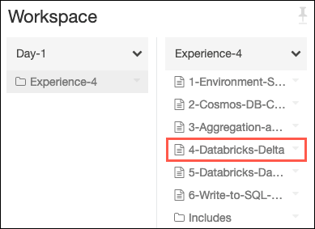In the shared workspace, the 4-Databricks-Delta notebook is selected under the Tech-Immersion/Day-1/Experience-4 folder.
In the 4-Databricks-Delta notebook, follow the instructions to complete the remaining steps of this task.
The notebook contains all the instructions needed to complete this task. In addition, the final cell of the notebook contains instructions on the next step, which will include a link to the notebook for the next task in this experience, or instructions to return to this document.
Task 6: Visualizations and dashboards with Databricks
In this task, you will use visualizations configured within a Databricks notebook to build a dashboard displaying your data aggregations.
In your Databricks workspace, select Workspace from the left-hand menu, then select Shared.
In the shared workspace, select the Tech-Immersion folder, followed by the Day-1 and Experience-4 folders. Then select the notebook named 5-Databricks-Dashboards.
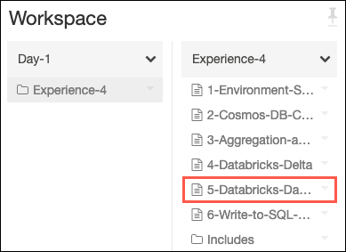In the shared workspace, the 5-Databricks-Dashboards notebook is selected under the Tech-Immersion/Day-1/Experience-4 folder.
In the 5-Databricks-Dashboards notebook, follow the instructions to complete the remaining steps of this task.
The notebook contains all the instructions needed to complete this task. In addition, the final cell of the notebook contains instructions on the next step, which will include a link to the notebook for the next task in this experience, or instructions to return to this document.
Task 7: Send summarized data to Azure SQL DW
In this task, you will use the Azure SQL Data Warehouse connector to write aggregated data from Databricks into your SQL DW. You will also apply aggregations to streaming data from the Cosmos DB Change Feed, and stream the data directly into your Azure SQL DW from Databricks.
In your Databricks workspace, select Workspace from the left-hand menu, then select Shared.
In the shared workspace, select the Tech-Immersion folder, followed by the Day-1 and Experience-4 folders. Then select the notebook named 6-Write-to-SQL-DW.
In the shared workspace, the 6-Write-to-SQL-DW notebook is selected under the Tech-Immersion/Day-1/Experience-4 folder.
In the 6-Write-to-SQL-DW notebook, follow the instructions to complete the remaining steps of this task.
The notebook contains all the instructions needed to complete this task. In addition, the final cell of the notebook contains instructions on the next step, which will include a link to the notebook for the next task in this experience, or instructions to return to this document.
Task 8: Generate reports in Power BI with data from Azure SQL DW
In this task, you will use Power BI Desktop to read data from Azure SQL DW to create reports showing vehicle telemetry data.
Launch Power BI Desktop, and select Get data on the splash screen.
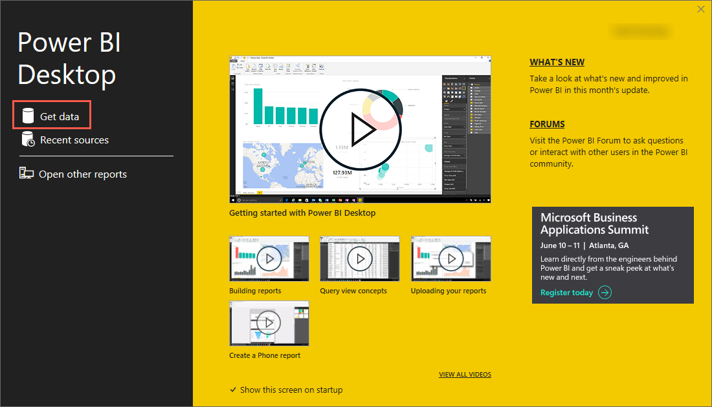The Power BI Desktop splash screen is shown with the Get data link highlighted.
On the Get Data dialog, select Azure on the left-hand side, select Azure SQL Data Warehouse from the list of available Azure services, and then select Connect.
The Power BI Get Data dialog is displayed, with Azure selected on the left and Azure SQL Data Warehouse selected on the right. The Connect button is highlighted.
On the SQL Server database dialog that appears, enter the following:
Server: Copy and paste the name of your SQL DW Server from the Azure portal.
In the Azure portal, navigate to the tech-immersion-XXXXX resource group (where XXXXX is the unique identifier assigned to you for this workshop), and select your SQL data warehouse resource.
The SQL data warehouse resource is highlighted in the tech-immersion resource group.
On the SQL DW overview blade, copy the Server name.
The Server name is highlighted on the SQL DW overview blade.
Database: Enter tech-immersion-sql-dw.
Data Connectivity mode: Select DirectQuery.
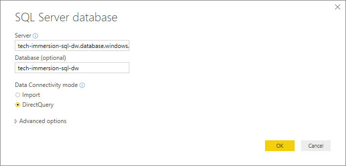The Power BI SQL Server database connection dialog is displayed. The tech-immersion-sql-dw server name is entered into the Server box, and tech-immersion-sql-dw is entered into the Database field. DirectQuery is selected for the Data Connectivity mode.
On the next dialog, select Database on the left-hand side, enter ti-admin as the User name and Password.1!! as the Password, and then select Connect.
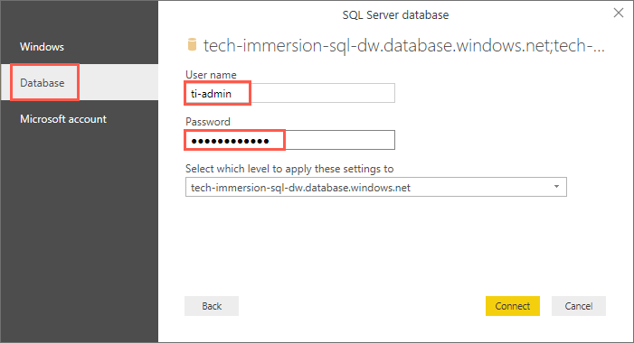In the SQL Server Database dialog, Database is selected and the credentials for the ti-admin account are entered into the user name and password fields.
After signing in, select the StreamData and VehicleTelemetry tables on the Navigator dialog, and then select Load.
StreamData and VehicleTelemetry are checked on the Navigator dialog.
After a few seconds, you will see a blank report appear, with a menu of Visualizations and Fields on the right-hand side. Under Fields, expand StreamData.
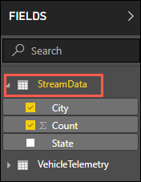StreamData is highlighted under Fields in Power BI
Next, select the Map visualization by clicking on it in the Visualizations section on the right.
The Map visualization is highlighted.
Drag the City field to Location, and Count to Size. This will place points of different sizes over cities on the map, depending on how many telemetry entries there are.
Screenshot displaying where to drag the fields onto the map settings.
Your map should look similar to the following:
The map is shown on the report.
Select a blank area on the report to deselect the map and then select the Line chart visualization.
The Line chart visualization is highlighted.
Drag the speed field to Axis and then drag the enginetemperature field to Values. This will allow you to visualize the relationship between speed and engine temperatures.
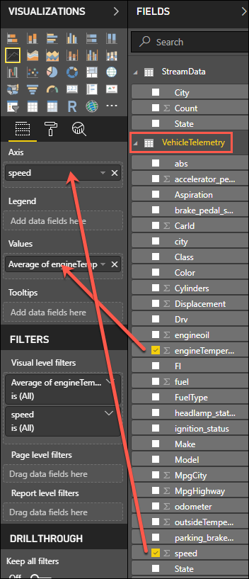Screenshot displaying where to drag the fields onto the line chart settings.
Next, select the down arrow next to the enginetemperature field under Values. Select Average from the menu to aggregate the values by average instead of the sum.
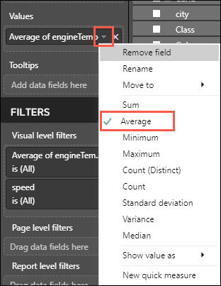The Average menu option is highlighted for the enginetemperature value.
Your line chart should look similar to the following:
The line chart is shown on the report.
Select a blank area on the report to deselect the line chart, and then select the Area chart visualization.
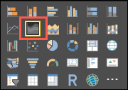The Area chart visualization is highlighted.
Drag the city field to Axis, the Make field to Legend, and the speed field to Values. This will display an area chart with different colors indicating the region and the speed at which drivers travel over time within that region.
Screenshot displaying where to drag the fields onto the area chart settings.
Select the down arrow next to the speed field under Values. Select Average from the menu to aggregate the values by average instead of the sum.
The Average menu option is highlighted for the speed value.
Your area chart should look similar to the following:
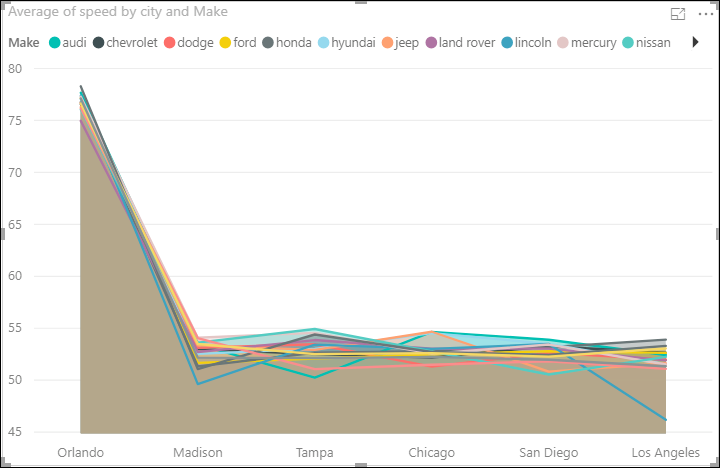The area chart on the report.
Select a blank area on the report to deselect the area chart. Now select the Line and stacked column chart visualization.
Line and stacked column chart visualization is highlighted.
Drag the Make field to Shared axis and then drag the MpgCity and MpgHighway fields into both the Column values and Line values fields.
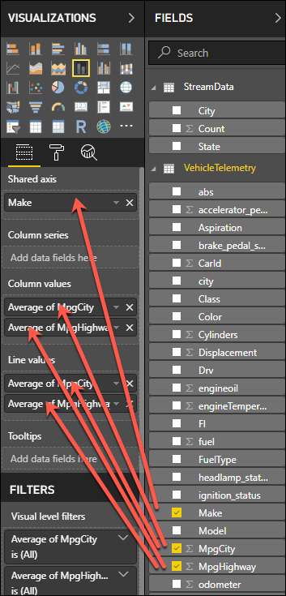Screenshot displaying where to drag the fields onto the line and stacked column chart settings.
Select the down arrow next to the MgpCity field under Column values. Select Average from the menu to aggregate the values by average instead of the sum.
The Average menu option is highlighted for the MpgCity value.
Repeat the step above for MpgHighway under Column values, and then do the same for both MpgCity and MpgHighway under Line values.
Your line and stacked column chart should look similar to the following:
The line and stacked column chart on the report.
Select Save on the Power BI Desktop toolbar in the upper left of the window, and then select a file location and enter a name, such as “Vehicle Telemetry”, then select Save.
Your final report should look similar to the following:
The report view.
Wrap-up
In this experience, you used Azure Data Factory (ADF), Azure Databricks, and Azure SQL Data Warehouse (SQL DW) together to build a modern data warehouse.
You started by using Azure Data Factory (ADF) to automate the movement of data in various formats gathered from various sources, including Cosmos DB, into Azure Data Lake Storage Gen2 (ADLS Gen2). You then used Azure Databricks to prepare, analyze and visualize those data. Next, you used Spark Structured Streaming, in connection with the Azure Cosmos DB Spark Connector, to query streaming data from the Cosmos DB Change Feed, demonstrating how you can easily include near real-time data in your queries and aggregations in Databricks. You wrote aggregations of both static and streaming data into Azure SQL Data Warehouse (SQL DW).
You ended the modern data warehouse experience by using Power BI Desktop to connect to your SQL DW, and building a dashboard to provide visualizations of vehicle telemetry data.
Additional resources and more information
To continue learning and expand your understanding of building modern data warehouses, use the links below.